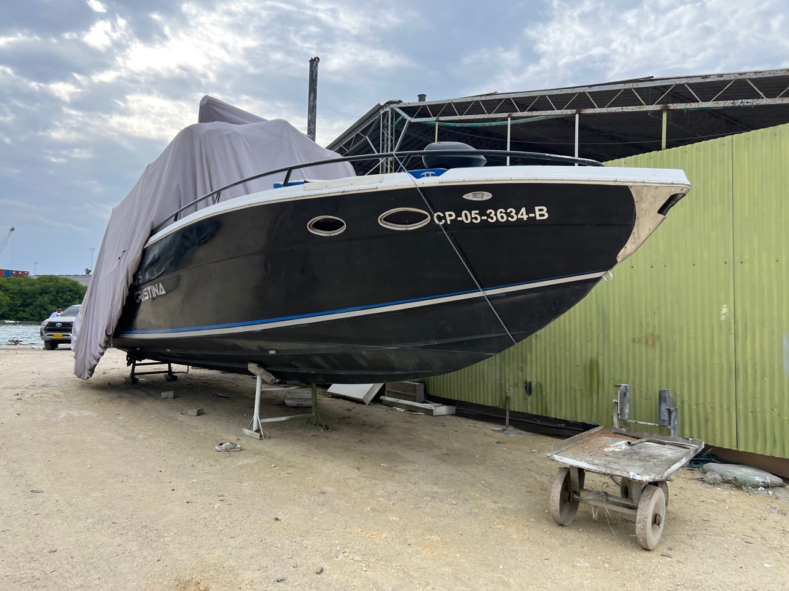

Enfríe y enjuague
Trabaje temprano o bajo sombra. Retire sal y polvo con abundante agua antes de tocar la superficie.
Cuidado post-servicio · Firpol 42
Manual personalizado para mantener la profundidad y el efecto espejo del gelcoat oscuro, y conservar limpia, flexible y protegida la cojinería marina después de su limpieza profesional.

El gelcoat fue corregido con el sistema profesional 3M Marine: compound para oxidación y opacidad, refinado para recuperar profundidad y sellado con cera marina. En paralelo se realizó la limpieza integral de la cojinería, retirando suciedad acumulada con un tratamiento compatible con tapicería marina.
El casco oscuro muestra con facilidad gotas secas, sal, halos y micro-rayones; la cojinería se deteriora principalmente por humedad retenida, bloqueador solar, aceites y falta de ventilación. Separar herramientas y productos es esencial.
Nunca lave el casco caliente ni deje secar agua o shampoo sobre él. El acabado oscuro exige más control de temperatura y secado que uno blanco.
Trabaje temprano o bajo sombra. Retire sal y polvo con abundante agua antes de tocar la superficie.
Diluya según la etiqueta y lave con guante de microfibra limpio, en movimientos largos y sin presión.
Enjuague el guante antes de volver a cargar shampoo. La arena atrapada produce micro-rayones muy visibles.
No deje secar espuma. Termine un panel, enjuague y continúe con el siguiente.
Use microfibra gruesa y limpia, apoyando y deslizando suavemente. Cambie la toalla si recoge suciedad.
Revise halos, gotas minerales y zonas sin repelencia. No intente corregirlas con compound doméstico.
Estas indicaciones aplican a cojinería de vinilo marino. Si alguna pieza es tela, cuero o alcántara, confirme el material antes de usar cualquier limpiador.
Retire bloqueador, sudor, bebidas y sal con un paño húmedo de microfibra. Seque costuras, pliegues y la cara inferior antes de guardar.
Levante los cojines para que circule aire. No cierre una cubierta sobre piezas húmedas: la humedad retenida favorece olor, moho y manchas.
Use agua, paño suave y limpiador específico para vinilo marino. Aplique primero en el paño para controlar el exceso y pruebe en un punto discreto.
Absorba, no restriegue. Trabaje de afuera hacia adentro, repita suavemente y retire el residuo con paño húmedo limpio.
Con la superficie limpia y seca, aplique un protector compatible con vinilo. Distribuya una capa uniforme y retire todo exceso para evitar tacto grasoso.
No sature. El exceso de agua puede entrar por la costura y quedar atrapado en la espuma. Si se moja, deje ventilar completamente.
Mantenga un kit separado para casco y otro para cojinería. No use la misma toalla en ambas superficies.
Shampoo pH balanceado que limpia suciedad y salitre sin retirar la cera existente. Ideal para el lavado regular del casco.
GelcoatAlternativa concentrada para fibra de vidrio, metal, vidrio, vinilo y superficies pintadas, formulada para preservar cera y polish.
Gelcoat · alternativaCompatible con el sistema aplicado. Úsela como refuerzo sobre gelcoat limpio, frío y completamente seco.
ProtecciónLimpiador para vinilo, plástico, caucho y cuero. Aplicar según etiqueta con paño, esponja o cepillo muy suave; probar antes en una zona discreta.
Cojinería · limpiezaProtección UV para vinilo, plástico y caucho. Aplicar sobre la superficie limpia, repartir uniformemente y retirar el exceso.
Cojinería · protección UVUse códigos de color: casco, cojinería y zonas de trabajo. Lave sin suavizante y retire cualquier herramienta que toque el piso.
HerramientasEn clima caliente y húmedo, la disciplina de secado y ventilación es tan importante como el producto.
| Frecuencia | Gelcoat oscuro | Cojinería |
|---|---|---|
| Después de cada salida | Enjuagar sal y secar completamente. | Retirar residuos, secar pliegues y ventilar cara inferior. |
| Cada 7–14 días | Lavado completo con shampoo marino neutro. | Limpieza suave de uso; revisar costuras y zonas de roce. |
| Cada mes | Revisar repelencia, gotas minerales y micro-rayones. | Limpieza detallada y protección UV si la superficie la requiere. |
| Cada 3 meses | Evaluar refuerzo de cera en superficies expuestas. | Revisión profunda de manchas, resequedad, moho y espuma húmeda. |
| A los 6 meses | Mantenimiento profesional del brillo y la protección. | Limpieza profesional y acondicionamiento según material y estado. |
Mantenimiento profesional
Programe la revisión a los seis meses, o antes si nota pérdida de repelencia, halos persistentes, resequedad del vinilo, olor a humedad o manchas que regresan.
Agendar por WhatsApp